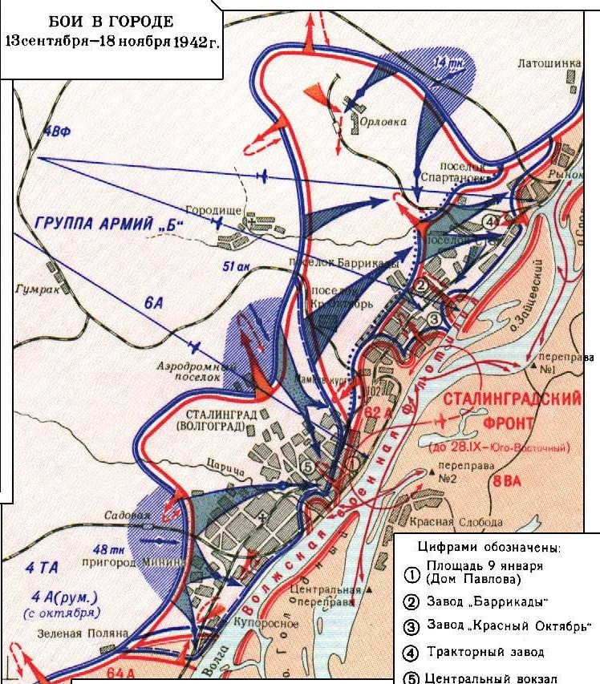

14-15 сентября 1942 года
Источник. Самсонов А. М. Сталинградская битва, 4-е изд., испр. и доп.— М.: Наука, 1989.
Событие: 14 сентября начало уличных боев.
В 12 часов гитлеровские войска обрушили на боевые порядки 62-й армии удар с применением большого числа танков и пехоты. Гитлеровцы старались расчленить советскую оборону, изолировать один обороняющийся участок от другого. Во второй половине дня противник прорвался к Сталинграду одновременно в нескольких местах: в районе пос. Купоросного, на Дар-Горе, по оврагу р. Царица и через территорию Авиагородка. В ходе ожесточённых уличных боёв гитлеровцы прорывались по р. Царице к Волге, отрезая от центра города Ворошиловский район, где сражались подразделения 4-й отдельной стрелковой бригады.
Карта

Источник: «Победа» от 2 февраля 2013 года
Событие: 15 сентября начала переправляться в Сталинград 13-я гвардейская стрелковая дивизия генерал-майора Александра Ильича Родимцева. Переправившись через Волгу, бойцы с ходу вступили в бой и захватили вокзал, дав эти возможность переправиться в город всей дивизии.
Из воспоминаний Ильи Александровича Родимцева, сына Александра Родимцева.
«Город Сталинград в памяти моего отца был самой большой вехой, самым большим событием в его биографии. Боевые заслуги Александра Родимцева были отмечены еще в Испании, где он принимал участие в гражданской войне. 22 октября 1937 года за образцово выполнение особого задания он первый раз получил звание Героя Советского Союза, и старшему лейтенанту было присвоено звание майора. Штаб 13 гвардейской находился в широкой трубе. По ее дну тонкой струйкой постоянно текла вода. В один прекрасный день привычное журчание прекратилось. В штабе на это обратили внимание, но значение не придали. Оказалось, зря. Как-то утром, в трубе послышался страшный шум - это была вода. Мощным потоком она вытолкнула еще сонных обитателей штаба, а на у на улице их встретил огонь противника. Отец рассказал, что тогда погибли многие. Удивительно, что за все войны, в которых участвовал отец, у него не было ни царапины от пуль неприятеля, хотя на передовой он бывал не раз. У каждого, видать, своя судьба.
Немногие выжили в тех страшных и кровопролитных боях под Сталинградом, но среди нас еще есть люди, которые тоже находились в огненном Сталинграде. Бойцы 13 –й гвардейской спасли 7-месячную Зиночку Андрееву и ее семью, спасли, всех, кого могли, но сами погибли.
На этой земле полегли тысячи и тысячи солдат. Только молодые люди могли подняться по крутому берегу, пойти в огонь и стоять здесь насмерть. Только представьте: больше1400 километров прошла до нас от границы СССР немецкая армия, но последние 100 метров до реки Волги они так и не смогли пройти. Родина генерала - села Шарлык, что в 120 километрах от Оренбурга. Он говорил: Я из Шарлыка, из Оренбуржья. Но вторая моя родина – Сталинград. Здесь я и мои бойцы родились во второй раз».
Источник: «Победа» от 2 февраля 2013 года
Событие. Бои за элеватор. В этот день начинаются бои за элеватор. Здание элеватора самое известное для немцев сооружение города и место сражения. Бывшие бойцы вермахта в своих мемуарах вспоминают, что более ожесточенных и страшных боев в Сталинграде. Чем за элеватор не было. Они даже сравнивают его с Брестской крепостью. Недаром, Паулюс лично придумал и своей рукой нарисовал эмблему-шеврон, на которой изображен элеватор и надпись: «Сталинград». Шеврон пришивался на рукав френча солдат, оставшихся в живых. После этой мясорубки. Этот знак отличия приравнивался к награде и ценился очень высоко. Это была и дань уважения противнику – немногие выжили в этой битве. До войны элеватор, построенный в 1940 г., был самым высоким сооружением в Ворошиловском районе Сталинграда. 14 сентября 1942 г. к нему подошли гитлеровцы. Элеватор обороняли моряки Волжской флотилии и гвардейцы 35-гвардейской стрелковой дивизии. Всего не более 60 чел. С двумя станковыми пулеметами и двумя противотанковыми ружьями. Элеватор несколько раз подвергался артиллерийскому обстрелу и бомбардировкам, у его защитников не хватало боеприпасов, отсутствовала связь. С высоты здания хорошо просматривались и простреливались пулеметным огнем центральная и южная части района. Защитники элеватора контролировали подступы к Волге, развязку пути окружной железной дороги и южном направлении на Бекетовку, Сарепту, Красноармейск, переправу на о. Голодный.
14 сентября 24-я танковая дивизия, входящая в 6-ю армию Паулюса, атаковала часть города, расположенную южнее р. Царицы, захватив железнодорожный вокзал ст. Сталинград-2 и прилегающие к нему городские кварталы. Быстрое продвижение танкового корпуса генерал-полковника Гота отрезало зернохранилище от основных частей.
На помощь защитникам элеватора под ливнем свинца пробирались морские пехотинцы 92-й стрелковой бригады. Прямо с переправы они ринулись в атаку. В непрерывных контратаках, рукопашных схватках и огненных дуэлях моряки полностью освободили прибрежную зону от реки Царицы до консервного завода, вырвались на ул. КИМ, Рабоче-Крестьянскую, Баррикадную, Козловскую, а отдельные группы завязали перестрелку с фашистами у железнодорожного вокзала Сталинград-2. Чтобы сломить сопротивление советских воинов, гитлеровцы подтянули артиллерию, танки. Горело зерно, дым разъедал глаза от гари и копоти, нечем было дышать. Не было воды и пищи. Двое суток сражались советские солдаты в полном окружении с численно превосходившими силами противника. К вечеру 20 сентября у защитников элеватора кончились боеприпасы, но борьба продолжалась. Моряки дрались с противником врукопашную. Даже раненые, которые хоть немного могли двигаться, нередко принимали участие в отражении атак.
Бои за элеватор шли целую неделю, с 15 по 22 сентября 1942 г. Отдельные его помещения по нескольку раз переходили из рук в руки. Только после того, как кончились боеприпасы, по приказу командования наши солдаты оставили элеватор и ночью вышли из окружения. Элеватор был захвачен немцами. В январе 1943 года элеватор вновь стал местом кровопролитных боев. Гитлеровцы, превратив его в мощный узел сопротивления, вели отсюда сильный артиллерийский и минометный огонь по войскам 64-й армии, наступавшей из центра города. К концу месяца воины 64-й армии очистили всю территорию Ворошиловского и Советского районов.
Ожесточенные бои продолжались во всех районах города. 18 сентября противник разгромил нефтебазу и Кировскую пристань, на следующий день - район завода «Красный Октябрь», центр города, поселок Бекетовка. 20 сентября был разрушен вокзал Сталинград I.
Источник. История земли Волгоградской А.С. Скрипкин А.В., Луночкин, И.И. Курилла, с. 168.
Героическая оборона советских войск истощила силы наступавшего врага. Главная группировка противника, действовавшая в районе Сталинграда, понеся большие потери, перешла к обороне. Безвозвратные потери советских войск в ходе оборонительных сражений составили около 324 тысяч человек, санитарные - около 320 тысяч. Вермахт потерял около 700 тысяч человек убитыми и ранеными.